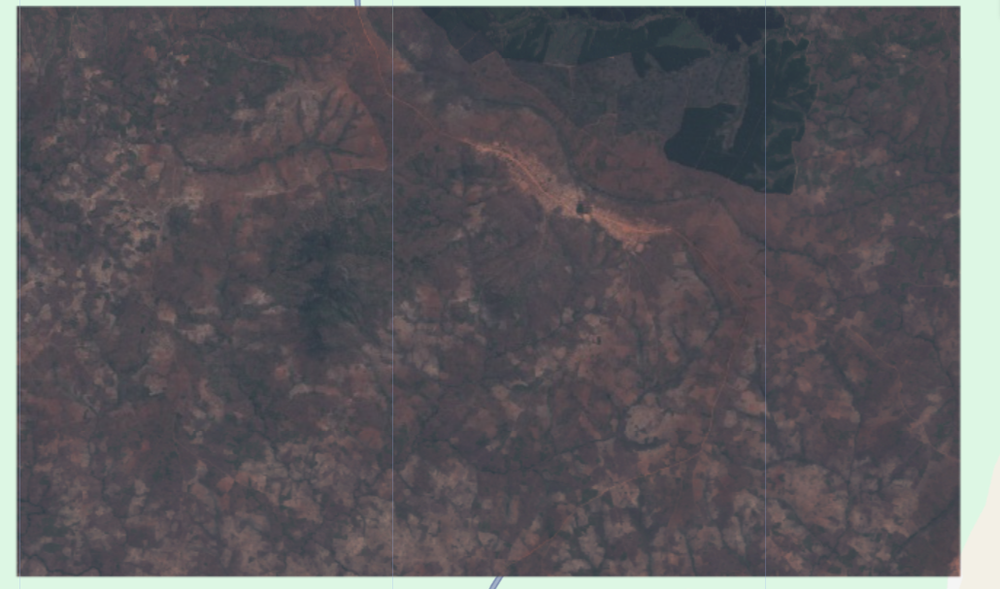

I used QGIS to create a vegetation indices map of Lichinga, Mozambique. I used the Normalized Difference Vegetation Index (NDVI) to further provide insight on the health and density of the vegetation.
Establishing the ROI and collecting the basic data
I picked a ROI in Mozambique, not too far from Lichinga. I chose this location since I noticed Mozambique had a high level of forest loss over the past few years, including in the regions surrounding Lichinga. The date ranges I choose were a full year, from January 1st to December 31st, and I choose to compare 2018 and 2024. Shorter ranges of months seemed to generate insufficient or partially faulty data. I felt as though a year provided the most accurate average data, and accounted for changes in season throughout the year.

Creating the Vegetation Indices Maps
An orthomosaic is a collection of overlapping aerial images taken by a satellite that have been combined to create one complete image. It chooses the best images from the data collected to create the most accurate representation of a specific geographic location. For this specific project, I used an orthomosiac to create various maps of different vegetation indices in Mozambique. The goal of this project is to visualize the devastating effects deforestation practices have had, through presenting the deforestation undergone between 2018 and 2024. The open data I used was collected from multispectral satellite imagery, which combines “bands” with different spectral frequencies in order to construct a cohesive image. Everything has a unique spectral frequency, for example, healthy vegetation and unhealthy vegetation have different electromagnetic frequencies. Through scanning and combining the readings of these frequencies, the satellite can construct an image that is highly useful for different types of land use analysis (such as this map).
More specifically, the data stems from the Sentinel-2 project, consisting of two satellites: Sentinel 2A and 2B, which cycle the Earth at complete polar opposites in order to gain consistently renewing and more accurate data. A full new set of data of the entire Earth collected by these satellites is available every five days. The project is funded by the Copernicus Institute, particularly the Land Mapping division, which uses the data in order to analyze and conduct research into general changes within land surface conditions, in other words: “monitoring of vegetation, soil and water cover, as well as the observation of inland waterways and coastal areas.” (Copernicus Data Space Ecosystem Website, 2026).
The predominant use and benefit of this data is therefore related to changes in land use, quality and health of our planet. In particular, this data can be used to figure out target areas at particular risk, or that have undergone significant changes in land conditions over certain timeframes. This map project, for example, is focusing on the contrast between 2018 and 2024, caused by deforestation practices and thus resulting in a negative shift in land conditions. This allows for further analysis that could uncover potential causes or influential factors, likewise encouraging research into potential sustainable pollution to prevent land degradation.

True Color Map (2018)

False Color Map (2018)

NDVI Map (2018)

True Color Map (2024)

False Color Map (2024)

NDVI Map (2024)
Analysis of Maps


True Color Maps, 2018 (above) and 2024 (below)
One important factor I certainly had to consider when creating my map, was the influence of seasonality on the quality of orthomosaic data. Different geographical factors, such as constant cloud cover over tropical rainforests during the rainy season, can have a serious impact on the quality of data collected. Choosing … to … to study Costa Rica, for example, therefore could result in a limited data set. A way to circumvent this issue is often to choose a longer period of time, such as an entire year instead of three months. Timeframes of a year, or more, allow for cloudless data to be collected as well. That is why, in my project, I opted for an entire year of data in both 2018 and 2024, since shorter time frames didn’t provide a complete orthomosaic
Here, we can see how the urban sprawl of the nearby city has led to rapid urbanization of previously green areas. In both the true color map, which highlights the city growth, as well as the false color map, which highlights the vegetation destruction, a clear pattern can be observed. As the city has sprawled outwards, the vegetation has been cut down and removed to make space. Mozambique has recently been …


False Color Maps, 2018 (left) and 2024 (right)
This is a false color map, which means it employs the spectral bands B8 (infra-red), B4 and B3. Please observe the red as representing vegetation: the most intense red is where vegetation is the most green, healthy and dense. Therefore, when comparing 2018 and 2024, we can see that there are specific red areas that have been entirely wiped out over the process of 6 years. The false color map is a helpful tool when visualizing destruction or growth of vegetation when comparing multiple years, as it vibrantly shows where precisely vegetation is located.


NDVI Maps, 2018 (left) and 2024 (right)
Using the NDVI map, we can further highlight the exact deforestation and destruction of vegetation that has been undertaken. The NDVI highlights the exact locations where deforestation has taken place. In this case, the red indicates the highest level of deforestation, while the green is an area that has stayed untouched. As can be seen, orange is dispersed throughout the map, but particularly in the same areas where urban expansion has taken place.

Further Notes on Deforestation In Mozambique
This map is likewise an NDVI map, but focused on the difference over time between 2018 and 2024. The darkest orange is where the most deforestation has taken place.
From the maps I created, the data clearly indicates a strong pattern of deforestation occurring throughout the 6 year time period. In particular, the NDVI difference between 2018 and 2024 (depicted on the left) highlights the deforestation that has occurred as a result of urban sprawl in this region. The ability of these indices to target specific regions to then implement more specific policies or solutions is precisely what makes them so important. In my example, Mozambique’s government could use the available data to locate particularly vulnerable areas – considering urbanization seems to be happening at a high rate currently, other vegetation and forested regions near or surrounding expanding cities are likely in danger. Using maps like these, the main threat can be reduced to specific regions.
Reflection
Main skills developed: Downloading satellite data, Changing between spectral bands, Calculating NDVI and differences in time, Analyzing results
This assignment allowed me to explore visualizing an issue that I am quite passionate about. I enjoyed working with this data a lot, I thought it was beautiful, interesting and connected to an extremely important topic and issue in modern day. Beyond learning about satellite data and the indices themselves, I learned how to calculate the NDVI and the difference over time as well. In particular, I valued learning how to interpret my calculations and transform the data and map I had created into a proper narrative while presenting them. This was my favorite project, as it allowed me to fully immerse myself in figuring out the best colors, designs and map style to construct my narrative and data on Mozambique’s deforestation. I enjoyed producing tangible results and visualizations of abstract data, and I believe these are useful skills that are widely applicable in both academic and external contexts.